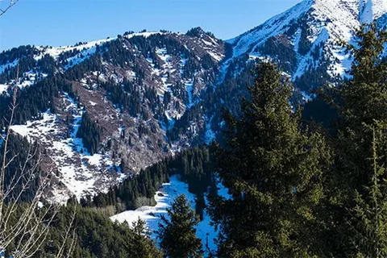
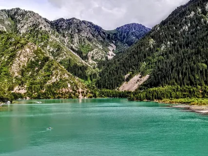

О городе
Алатау — город, расположенный в восточной части Казахстана, известный своими природными красотами и историческими памятниками. Город образовался вокруг горнодобывающей промышленности.
История
Алатау возник в начале XX века как поселение для работников горнодобывающей отрасли. С тех пор город постепенно развивался, получив статус города в середине века. Сегодня Алтау сочетает промышленное наследие и природные красоты.
Достопримечательности
-

Горы Алатау - живописные горы, популярные среди туристов и альпинистов.
-

Озеро Алатау - красивое озеро с чистой водой, любимое место отдыха жителей и туристов.
Культура
В Алатау проходят городские фестивали, концерты, выставки и культурные мероприятия. Город сохраняет уникальное сочетание природы и истории.
Интересные факты
- Алатау расположен на востоке Казахстана в живописной горной зоне.
- Город известен своей природой и туристическими маршрутами.
- Местные музеи рассказывают о традициях и истории региона.